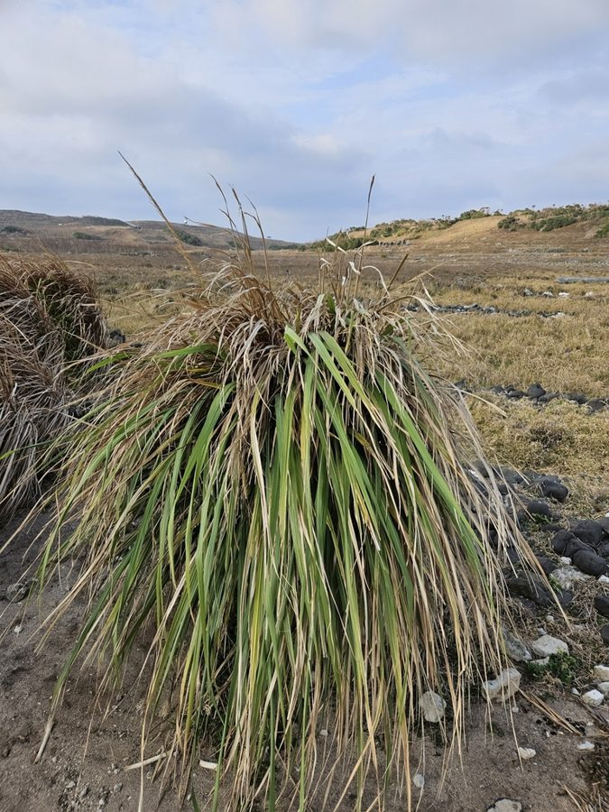

हार्डी गन्ना घासHardy Sugarcane
Tripidium arundinaceum · Poaceae · FLR-0323

- Scientific name वैज्ञानिक नाम
- Tripidium arundinaceum (Retz.) Welker, Voronts. & E.A.Kellogg
- Family कुल
- Poaceae
- Hindi हिंदी
- हार्डी गन्ना घास
- Local names स्थानीय नाम
- hardy sugarcane, rambans ghas, sarpat, bansi ghas
- Status here यहाँ की स्थिति
- native
- Movement आवागमन
- Resident, here all year
- Known from कहाँ दर्ज
- Others have published records from the wider Awadh–Purvanchal plain, none yet from Basti–Ayodhya अवध–पूर्वांचल से दूसरों के प्रकाशित अभिलेख, बस्ती–अयोध्या से अभी नहीं
- IUCN IUCN
- not evaluated
- Review समीक्षा
- not yet reviewed
When to look कब देखें
Present all year. साल भर मौजूद।
Uses and possibilities उपयोग और संभावनाएँ
Drawn from the documented uses in the profile below, where each is labelled traditional, current or a research lead. All uses →
Tell it apart from इनसे अलग पहचानें
हार्डी गन्ना घास / Hardy Sugarcane
Tripidium arundinaceum (Retz.) Welker, Voronts. & E.A.Kellogg — Poaceae
हार्डी गन्ना घास — नदियों के कछार और दलदली किनारों पर उगने वाली एक विशाल, नरकट जैसी बारहमासी जंगली घास, जिसे सरपत या रामबांस भी कहा जाता है। इसके मोटे बाँस जैसे तने कई मीटर ऊँचे उठते हैं और जाड़ों में इसके सिरे पर विशाल, घने, चाँदी जैसे सफ़ेद रेशमी फूलों के चंवर लहराते हैं। इसकी मजबूत डंडियों से ग्रामीण छप्पर, बाड़ और कुर्सियां बनाई जाती हैं।
Quick Identification त्वरित पहचान
| Feature | Description |
|---|---|
| Habit | Giant clump-forming perennial reed-like grass 2–6 m tall (Bor 1960) |
| Culms | Robust, woody, solid or hollow at center, up to 2 cm thick at base (Bor 1960) |
| Leaves | Broadly linear, 1–2 m long, 2–5 cm wide, with a stout white midrib (Duthie 1888) |
| Margins | Very sharp, finely serrulate with microscopic silica teeth capable of cutting flesh |
| Inflorescence | Immense, dense, silvery-grey to cream plumose panicle 40–100 cm long (Bor 1960) |
| Spikelets | Minute, surrounded by dense involucral tufts of silky hairs twice as long as the glumes (Bor 1960) |
Field tip: Look along river sandbars and wide drainage canals in winter for massive reed clumps exceeding three meters in height with broad white-ribbed leaves and giant silvery flowering plumes.
हिंदी — कैसे पहचानें: गन्ने जैसे मोटे और ऊँचे तने, बहुत लंबी पत्तियाँ जिनके बीच में सफेद मोटी नस होती है, और जाड़ों में खिलने वाले चाँदी जैसे चमकीले घने चंवर।
Morphology शारीरिक संरचना
Biometrics (Bor 1960; Duthie 1888):
| Measurement | Range |
|---|---|
| Culm height | 2–6 m (Bor 1960) |
| Culm basal diameter | 1–2 cm (Bor 1960) |
| Leaf blade length | 1–2 m (Duthie 1888) |
| Leaf blade width | 2–5 cm (Duthie 1888) |
| Panicle length | 40–100 cm (Bor 1960) |
| Callus hair length | 4–7 mm (Bor 1960) |
Culms and rhizomes: Culms caespitose, forming dense towering clumps from stout, woody, creeping subterranean rhizomes. Internodes smooth, greenish or pale yellowish; nodes glabrous.
Leaf blades and sheaths: Sheaths overlapping, smooth, striate, with silky hairs at the mouth. Leaf blades broadly linear, flat, coriaceous, dark green with a conspicuous broad white midrib above, margins armed with sharp cutting serrulations.
Inflorescence and spikelets: Inflorescence a dense, decompound, erect plumose panicle. Branchlets slender, ascending. Spikelets paired, one sessile and one pedicelled, each surrounded by copious spreading silky white or pale silvery-yellow hairs emerging from the callus. Glumes subequal, membranous to subcoriaceous.
हिंदी: जड़ें बहुत मजबूत और तने गन्ने की तरह ठोस होते हैं। पत्तियों के किनारे इतने तेज होते हैं कि हाथ कट सकता है। फूल की बाली बहुत बड़ी, रेशमी और घनी होती है।
Behaviour & Ecology व्यवहार एवं पारिस्थितिकी
Tripidium arundinaceum is an aggressive riparian pioneer plant adapted to severe monsoonal flood regimes and seasonal inundation. Its dense subterranean rhizome system anchors riverbanks and sandbars against torrential river currents.
The massive culms act as natural silt traps during floods, gradually accreting alluvial soil and creating elevated stable ground in active floodplains. Flowering takes place from October to January, producing vast clouds of wind-dispersed plumose spikelets that drift over water bodies. Thick stands offer essential daytime cover for wild mammals and nocturnal roosting sites for flocks of wading birds.
हिंदी: बाढ़ के पानी में यह घास मिट्टी को कटने से रोकती है। इसके घने झुरमुटों में जंगली सुअर और नीलगाय छिपते हैं तथा दलदली पक्षी रात में बसेरा करते हैं।
Life Cycle / Phenology जीवन चक्र एवं ऋतुचक्र
| Period | Phenological Event |
|---|---|
| March–May | Clumps withstand dry pre-monsoon heat; basal shoots remain semi-dormant |
| June–September | Immense vegetative growth surges during monsoon, with culms shooting up several meters |
| October–December | Huge plumose panicles emerge, turning from pinkish-tinted silvery-cream to pure white |
| January–February | Silky spikelets detach and drift in winter winds; foliage begins to dry into yellow cane |
Rhizomatous propagation predominates in riparian habitats, with broken rhizome fragments establishing downstream after flood spates.
हिंदी: बरसात में इसके नए कल्ले बहुत तेजी से बढ़ते हैं। जाड़े के शुरू में विशाल सफेद चंवर खिलते हैं और बसंत आते-आते बीज हवा में उड़ जाते हैं।
Associated Species / Interactions संबद्ध प्रजातियाँ एवं पारस्परिक क्रियाएं
- Avian Cover: Swamp birds and grassland warblers roost and nest within the dense interior canes.
- Mammalian Refuge: Wild boar and nilgai find secure breeding and resting shelters in extensive stands.
- Riverine Associates: Co-occurs on river bluffs and alluvial sands with Munja Grass, Kans Grass, and Thatch Grass.
हिंदी: नदी किनारे यह मूँज और काँस के साथ मिलकर घने जंगल जैसी झाड़ियाँ बनाती है जहाँ अनेक पक्षी शरण लेते हैं।
Pests and Diseases कीट एवं रोग
- Sugarcane shoot borers (Chilo infuscatellus) occasionally bore into tender young monsoon shoots.
- Rust caused by Puccinia melanocephala produces brown lesions on aging leaf blades.
- Smut fungi infect developing terminal inflorescences during humid autumn months.
हिंदी: युवा कल्लों में कभी-कभी छेदक कीड़े लग जाते हैं और पुरानी पत्तियों पर भूरे रतुआ के धब्बे दिखाई देते हैं।
Agricultural / Human Relevance कृषि एवं मानवीय उपयोगिता
Rural Craft and Construction Uses:
- Thatching and screening. The thick woody culms are harvested extensively for making durable thatched roofs, verandah blinds (chicks), and rural boundary screens.
- Furniture and crafts. Split stems are woven into sturdy stools (mudhas), light chairs, and agricultural storage bins.
- Paper pulp. Stems provide valuable long-fibred raw material traditionally used by regional pulp and paper mills.
- Erosion control. Planted along field perimeters and canal borders as a sturdy living windbreak and earthen bank stabilizer.
Today. It remains a prized non-timber forest product across eastern Uttar Pradesh river corridors, generating seasonal income for rural basket weavers and thatchers.
हिंदी: इसके मजबूत तनों से मूंढ़े, छप्पर की टाटियां, बाड़ और दलदली किनारों को मजबूत करने वाली दीवारें बनाई जाती हैं। कागज उद्योग में भी इसकी घास का उपयोग होता रहा है।
Expected Locally स्थानीय संभावना एवं उपस्थिति
Not a field record. Written from published accounts for eastern Uttar Pradesh. No confirmed local sighting yet — if you have seen it, that is what the atlas needs.
अभी तक स्थानीय पुष्टि नहीं। यह विवरण प्रकाशित स्रोतों से है, किसी अवलोकन से नहीं।
Expected in eastern Uttar Pradesh along alluvial sandbars, river islands (diaras), flood embankments of the Ghaghara, Saryu, and Kuwana rivers, and peripheral drainage marshes. GBIF holds published records from the wider Awadh–Purvanchal plain, none yet from Basti–Ayodhya. A first local record would be a dated photograph of the spikelets, inflorescence, or foliage, submitted with locality details through the project's About page.
Distribution भौगोलिक वितरण
Global range: Native across South Asia, Southeast Asia, and southern China, extending into Indonesia and the Philippines.
In India: Widespread in moist riverine tracts throughout the northern plains, Assam, West Bengal, Odisha, and peninsular river basins (Bor 1960).
In Uttar Pradesh: Abundant along major river floodplains and low-lying tarai drainage channels (Duthie 1888).
In Basti district / eastern UP: Expected along sandy river islands, canal seepages, and low-lying waterlogged borders.
हिंदी: भारत की प्रमुख नदियों के कछारों और तराई के नम मैदानों में यह विशाल घास बहुतायत से पाई जाती है।
Research Questions शोध प्रश्न
- How much biomass does Tripidium arundinaceum produce annually along flood embankments in eastern UP? / पूर्वी उत्तर प्रदेश में नदी के तटबंधों पर यह घास प्रति वर्ष कितना जैवभार पैदा करती है?
- Which bird species rely specifically on its giant panicles for winter nesting material? / जाड़ों में अपने घोंसले बनाने के लिए कौन-से पक्षी इसके रेशमी चंवर का उपयोग करते हैं?
- What is the current economic value of harvested culms for local mudha craftsmen in Basti? — Survey rural artisans in five riverside villages.
- How effective are Tripidium stands in reducing riverbank erosion during peak monsoon surges? — Measure bank retreat behind vegetated versus bare sandy shores.
- Does the plant harbor beneficial parasitoids that attack commercial sugarcane stem borers? / क्या इस जंगली घास में ऐसे परजीवी कीट रहते हैं जो गन्ने के छेदक कीटों को नियंत्रित करते हैं?
Similar Species समान प्रजातियाँ
| Species | How to tell apart | हिंदी |
|---|---|---|
| Munja Grass (Saccharum munja) | Leaves narrower, channelled; culms pithy inside; ligule with long hairs | मूँज के तने रेशेदार, पत्तियाँ सँकरी |
| Kans Grass (Saccharum spontaneum) | Much narrower leaves without prominent blade; silvery panicle smaller | काँस की पत्तियाँ बहुत पतली, चंवर छोटा |
| Sugarcane (Saccharum officinarum) | Culms juicy and sweet; cultivated crop; rarely produces dense wild clumps | मीठा रसदार गन्ना, केवल खेतों में उगाया जाता है |
Field rule: Giant reed grass with towering culms, broad white-ribbed cutting leaves, stout woody boles, and immense silvery plumose panicles identifies Tripidium arundinaceum.
Taxonomy & Classification वर्गिकी एवं वर्गीकरण
Original description. First described as Saccharum arundinaceum by Anders Jahan Retzius in 1786 in Observationes Botanicae, vol. 4, p. 14. Transferred to Tripidium by Welker, Vorontsova & Kellogg in 2019 in Taxon 68(2): 253.
Subspecies. Monotypic — recognized as Tripidium arundinaceum without formal infraspecific divisions.
Family and order placement. Belongs to the grass family Poaceae, subfamily Panicoideae, tribe Andropogoneae, subtribe Saccharinae, in the order Poales.
Phylogenetic notes. Recent phylogenomic analyses segregated the Old World wild sugarcane relatives (S. arundinaceum, S. ravennae) into the resurrected genus Tripidium, distinct from Saccharum sensu stricto.
IUCN status rationale. Not evaluated in the master expansion list; it is widespread, abundant, and under no conservation threat across Asian river systems.
हिंदी: इसे 1786 में रेट्ज़ियस ने सैकेरम वंश में वर्णित किया था, जिसे 2019 में आधुनिक आनुवंशिक अध्ययनों के आधार पर ट्रिपिडियम वंश में स्थानांतरित किया गया।
Photo Gallery छायाचित्र दीर्घा
No photos yet — add field photos to media/species/hardy_sugarcane/ and run node scripts/sync_photos.js.
Photos needed आवश्यक फोटो
- [ ] Giant clump on a riverbank showing towering height (नदी किनारे विशाल नरकट जैसा झुरमुट)
- [ ] Broad leaf blade displaying the distinctive white midrib (सफेद मध्य शिरा वाली चौड़ी पत्ती)
- [ ] Mature silvery-white plumose panicle in winter (जाड़ों में खिला विशाल रेशमी सफेद चंवर)
References संदर्भ सूची
- Welker, C.A.D., Vorontsova, M.S. & Kellogg, E.A. (2019). A new classification of Saccharum and related genera (Poaceae: Andropogoneae). Taxon, 68(2), pp. 246–265.
- Retzius, A.J. (1786). Observationes Botanicae, vol. 4, p. 14. Lipsiae: Siegfried Lebrecht Crusium.
- Bor, N.L. (1960). The Grasses of Burma, Ceylon, India and Pakistan (Excluding Bambuseae), p. 211. Pergamon Press, Oxford.
- Duthie, J.F. (1888). The Fodder Grasses of Northern India, pp. 64–65. Thomason Civil Engineering College Press, Roorkee.
- Hooker, J.D. (1896). The Flora of British India, vol. 7, p. 119. L. Reeve & Co., London.
- GBIF Occurrence Data — Tripidium arundinaceum (Retz.) Welker, Voronts. & E.A.Kellogg, India (2025).
Source file: species/flora/grasses/hardy_sugarcane.md